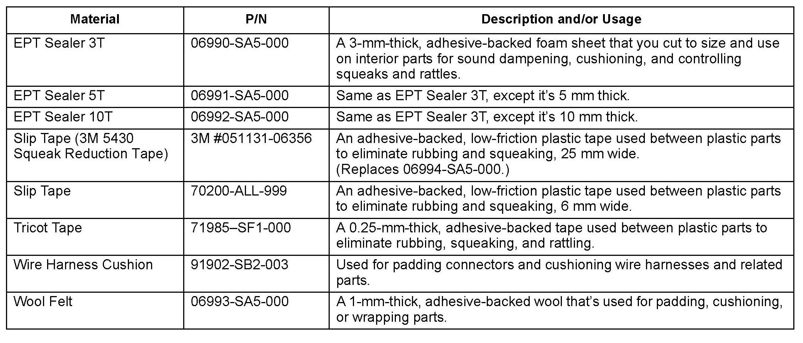
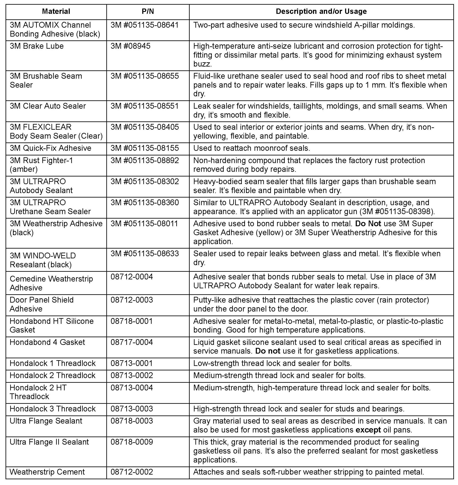
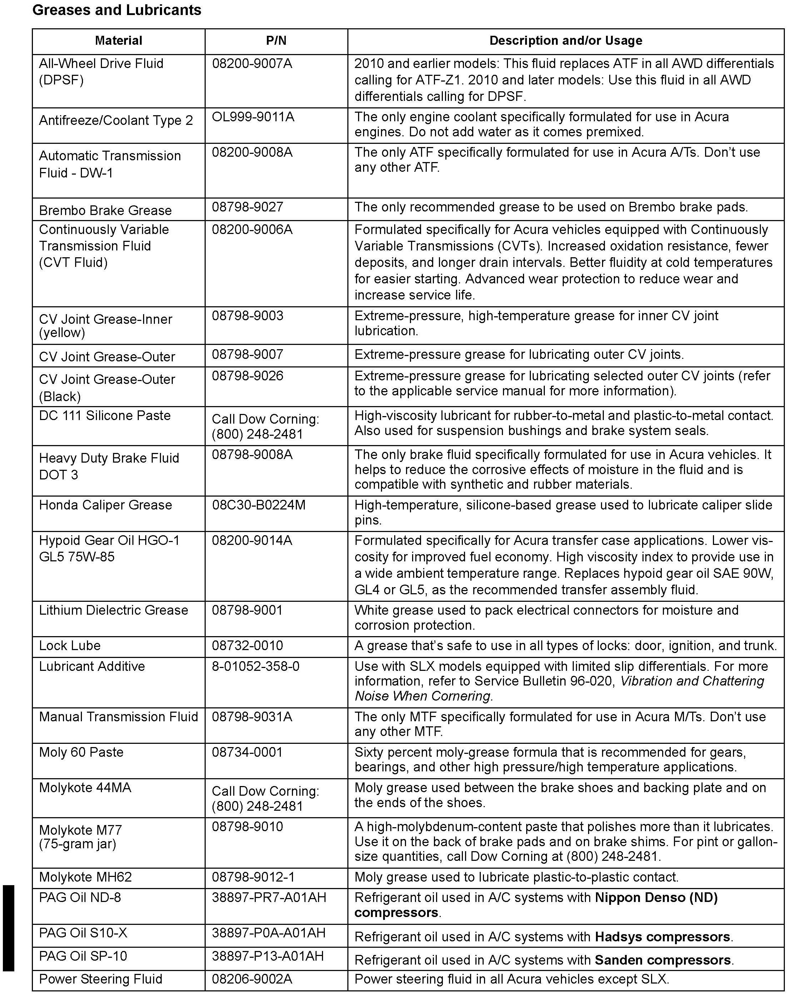
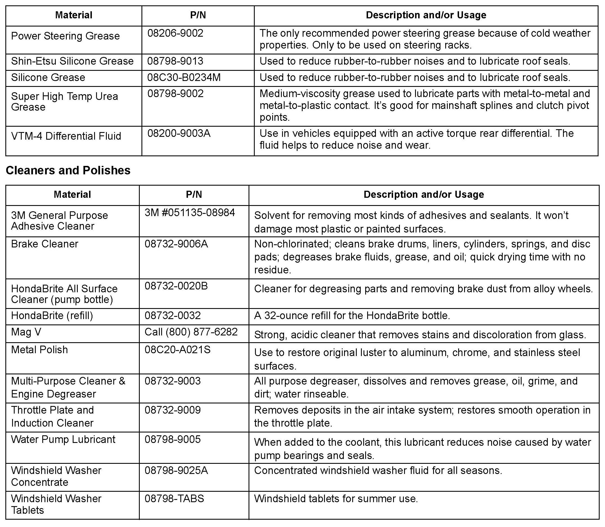

Vehicle - Recommended Service Materials/Sealers/Lubricants
99-015August 2, 2012
Applies To:
ALL
Recommended Materials
(Supersedes 99-015, dated May 17, 2012, to revise the information marked by the black bars and asterisks)
REVISION SUMMARY
*Under Greases and Lubricants, two part numbers and a fluid name were changed.*
Many procedures in service bulletins and other service publications require you to use adhesives, sealants, lubricants, solvents, wool felt, EPT sealer, etc. While some of these materials look and feel similar to each other or to non-approved materials, always use the recommended material to save yourself a costly comeback and a dissatisfied client. Remember, a material that's "almost the same" probably wont do the job.
A recommended material is selected by Acura engineers only after its effectiveness has been evaluated underthe conditions in which it will be used. To select the best materials, factors such as these are considered:
^ The compounds that make up the part(s) being used.
^ The materials resistance to temperature, moisture, vibration, etc.
^ Whether the material needs to be dry or pliable.
^ How the material bonds to dissimilar parts, for example, rubber to glass, plastic to rubber, and plastic to metal.
This service bulletin describes most of the recommended materials commonly referenced in Acura service and training publications. The materials are grouped into four categories: Insulating Products, Adhesives and Sealers,
Greases and Lubricants, and Cleaners and Polishes. You can purchase these materials through local suppliers; many are also available through Acura. Please share the information in this bulletin with the people in your Parts department.

Insulating Products

Adhesives and Sealers


Greases and Lubricants

Disclaimer